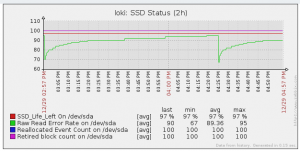

At home, I'm using Zabbix to monitor my servers, it has plenty of interesting features and can be extended a lot by using User Parameter.
In this post, I'm gonna talk about Low Level Discovery (LLD). If you are only interested in the final result, go the Conclusion section, you can download my template containing all the rules ;)
Low Level Discovery (LLD)
LLD is a feature to automatically discover some properties of the monitored host and create items, triggers and graphs.
By default, Zabbix support three types of item discovery:
- Mounted filesystems
- Network interface
- SNMP's OIDs
The first two are very useful, since they will give you by default, for instance, the free space of each mounted file system or the bandwith going in and out of each network interface. As I only monitor Linux servers, I don't use the last one, but it will eventually interest other people.
Another very interesting thing about this feature is that you can extend it by discovering more items. In this article, I will show how to discover CPUs, CPU Cores and Hard Disk.
The most important part of custom discovery is to create a script on the monitored machines that can "discover" something. It can be any executable, the only thing important is that it outputs data in the correct format. I have to say that the format is quite ugly, but that is probably not very important ;) Here is the output of my hard disk discovery script:
{
"data":[
{"{#DISKNAME}":"/dev/sda","{#SHORTDISKNAME}":"sda"},
{"{#DISKNAME}":"/dev/sdb","{#SHORTDISKNAME}":"sdb"},
{"{#DISKNAME}":"/dev/sdc","{#SHORTDISKNAME}":"sdc"},
{"{#DISKNAME}":"/dev/sdd","{#SHORTDISKNAME}":"sdd"},
{"{#DISKNAME}":"/dev/sde","{#SHORTDISKNAME}":"sde"},
{"{#DISKNAME}":"/dev/sdf","{#SHORTDISKNAME}":"sdf"},
{"{#DISKNAME}":"/dev/sdg","{#SHORTDISKNAME}":"sdg"},
]
}
You can have as many keys for each discovered items, but the format must remains the same. In the item, trigger and graph prototypes, you will then use {#DISKNAME} or {#SHORTDISKNAME} to use the discovered values.
Once you have created your scripts, you have to register it in the zabbix configuration as a user parameter. For instance, if you use the zabbix daemon, you need these lines in /etc/zabbix/zabbix_agentd.conf:
EnableRemoteCommands=1
...
UnsafeUserParameters=1
...
UserParameter=discovery.hard_disk,/scripts/discover_hdd.sh
Now, when you will create the discovery rule, you can use discovery.hard_disk as the key.
A discovery rule in itself is useful without prototypes, you can create three types of prototypes:
- Item Prototype: This will create a new item for each discovered entity
- Trigger Prototype: This will create a new trigger for each discovered entity.
- Graph Prototype: This will create a graph for each discovered entity.
The most useful are by far the item and trigger prototypes. The biggest problem with graphs is that you cannot create an aggregate graph of each discovered items. For instance, if you record the temperature of your CPU cores, you cannot automatically create a graph with the temperature of each discovered cores. For that, you have to create the graph in each host. Which makes, imho, graph prototypes pretty useless. Anyway...
In the next section, I'll show how I have created discovery rules for Hard Disk, CPU and CPU cores.
Discover Hard Disk
The discovery script is really simple:
#!/bin/bash
disks=`ls -l /dev/sd* | awk '{print $NF}' | sed 's/[0-9]//g' | uniq`
echo "{"
echo "\"data\":["
for disk in $disks
do
echo " {\"{#DISKNAME}\":\"$disk\",\"{#SHORTDISKNAME}\":\"${disk:5}\"},"
done
echo "]"
echo "}"
It just lists all the /dev/sdX devices, remove the partition number and remove the duplicates, to have only the hard disk at the end.
I've created several item prototypes for each hard disk. Here are some examples using S.M.A.R.T. (you can download the template with all the items in the Conclusion section):
- Raw Read Error Rate
- Spin Up Time
- SSD Life Left
- Temperature
- ...
You may notice that some of them only make sense for SSD (SSD Life Left) and some others do not make any sense for SSD (Spin Up Time). This is not a problem since they will just be marked as Not Supported by Zabbix.
All these datas are collected using the smartctl utility.
I've also created some trigger to indicate the coming failure of an hard disk:
- SSD Life Left too low
- Reallocated Sector Count too low
- ...
I've just used the threshold reported by smartctl, they may be different from one disk manufacturers to another. I don't put a lot of faith on these values, since disk generally fail before going to threshold, but it could be a good indicator anyway.
Discover CPUs
Here is the script to discover CPUs:
#!/bin/bash
cpus=`lscpu | grep "CPU(s):" | head -1 | awk '{print $NF}'`
cpus=$(($cpus-1))
echo "{"
echo "\"data\":["
for cpu in $(seq 0 $cpus)
do
echo " {\"{#CPUID}\":\"$cpu\"},"
done
echo "]"
echo "}"
It just uses lscpu and parses its output to find the number of CPU and then create an entry for each CPUs.
I just have one item for each CPU: The CPU Utilization.
I haven't created any trigger here.
Discover CPU Cores
Just before, we discovered the CPUs, but it is also interesting to discover the cores. If you don't have Hyperthreading, the result will be the same. It is especially interesting to get the temperature of each core. Here is the script:
#!/bin/bash
cores=`lscpu | grep "Core(s) per socket:" | awk '{print $NF}'`
cores=$(($cores-1))
echo "{"
echo "\"data\":["
for core in $(seq 0 $cores)
do
echo " {\"{#COREID}\":\"$core\"},"
done
echo "]"
echo "}"
It works in the same way as the previous script.
I've only created one item prototype, to get the temperature of each core with lm_sensors.
Wrap-Up
Here are all the UserParameter necessary to make the discovery and the items works:
### System Temperature ###
UserParameter=system.temperature.core[*],sensors|grep Core\ $1 |cut -d "(" -f 1|cut -d "+" -f 2|cut -c 1-4
### DISK I/O###
UserParameter=custom.vfs.dev.read.ops[*],cat /proc/diskstats | egrep $1 | head -1 | awk '{print $$4}'
UserParameter=custom.vfs.dev.read.ms[*],cat /proc/diskstats | egrep $1 | head -1 | awk '{print $$7}'
UserParameter=custom.vfs.dev.write.ops[*],cat /proc/diskstats | egrep $1 | head -1 | awk '{print $$8}'
UserParameter=custom.vfs.dev.write.ms[*],cat /proc/diskstats | egrep $1 | head -1 | awk '{print $$11}'
UserParameter=custom.vfs.dev.io.active[*],cat /proc/diskstats | egrep $1 | head -1 | awk '{print $$12}'
UserParameter=custom.vfs.dev.io.ms[*],cat /proc/diskstats | egrep $1 | head -1 y| awk '{print $$13}'
UserParameter=custom.vfs.dev.read.sectors[*],cat /proc/diskstats | egrep $1 | head -1 | awk '{print $$6}'
UserParameter=custom.vfs.dev.write.sectors[*],cat /proc/diskstats | egrep $1 | head -1 | awk '{print $$10}'
UserParameter=system.smartd_raw[*],sudo smartctl -A $1| egrep $2| tail -1| xargs| awk '{print $$10}'
UserParameter=system.smartd_value[*],sudo smartctl -A $1| egrep $2| tail -1| xargs| awk '{print $$4}'
### Discovery ###
UserParameter=discovery.hard_disk,/scripts/discover_hdd.sh
UserParameter=discovery.cpus,/scripts/discover_cpus.sh
UserParameter=discovery.cores,/scripts/discover_cores.sh
(it must be set in zabbix_agentd.conf)
You also need to give zabbix the right to use sudo with smartctl. For that, you have to edit your /etc/sudoers file and add this line:
ALL ALL=(ALL)NOPASSWD: /usr/sbin/smartctl
Conclusion and Download
I hope that this helps some people to use Low Level Discovery in their Zabbix Monitoring Installation.
LLD eases a lot the creation of multiple items discovery for hosts with different hardware or configuration. However, it has some problems for which I have not yet found a proper solution. First, you have to duplicate the client scripts on each host (or at least have them on a share available from each of them). Then, the configuration of each agent is also duplicated in the configuration of each host. The biggest problem I think is the fact that you cannot automatically create graph with the generated items of each discovered entities. For instance, I had to create a CPU Temperature graph in each of my host. If you have few hosts, like many, it is acceptable, but if you have hundreds of hosts, you just don't do it.
All the scripts and the template export file are available in the zabbix-lld repository. For everything to work, you need the lscpu, lm_sensors and smartmontools utilities.
If you have any question or if something doesn't work (I don't offer any guarantee, but it should work on most recent Linux machines), don't hesitate to comment on this post.

{kind=link}
{kind=link}
{kind=link}
{kind=link}
{kind=link}
{kind=link}
{kind=link}
{kind=link}
{kind=link}
{kind=link}
{kind=link}
{kind=link}